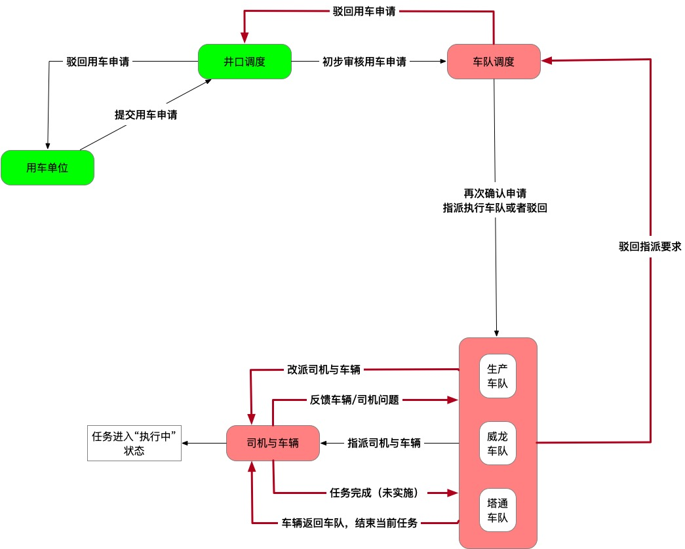
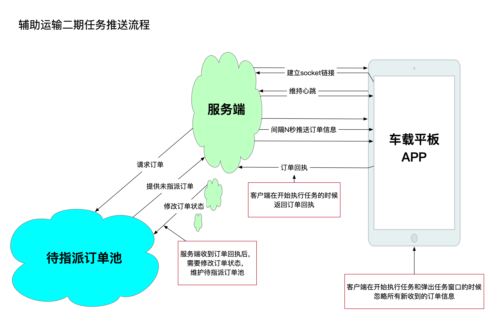
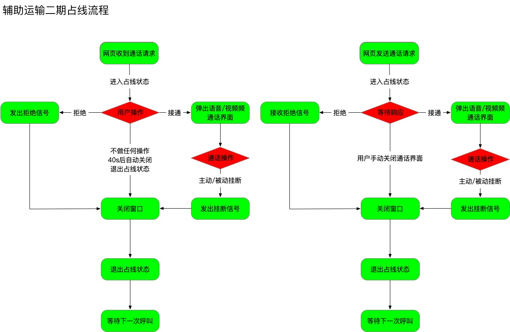

2019年度工作总结
辅助运输车网页功能
辅助运输车队派车流程调整
完善派车流程
增加车队驳回功能
增加执行车队驳回功能
增加任务改派功能
增加手机号与司机绑定功能
增加任务结束功能：手动结束自动结束
增加司机与车辆绑定动能（结束任务后作为一个有效实体指派新任务）
增加司机与车辆解绑功能
完善任务状态功能
增加车辆执行任务明细展示功能：执行中已完成已拒绝无效派车
井下空车重车计算功能（测试阶段）
增加地图车辆
空车选功能
增加地图车辆部门筛选功能
查看空车重车比例分布图功能
分类查看空车重车详细执行情况功能
统计报表功能
1 | 统计功能计算错峰执行 |
用车申请统计
申请订单统计
已指派车队统计
已派车统计
未指派车队统计
未派车统计
驳回申请统计
有效派车统计里程统计
车辆里程统计
司机里程统计
项目部用车里程统计
车队里程统计工时统计
车辆工时统计
司机工时统计
项目部用车工时统计
车队工时统计
井下候车站功能
- 候车站地点筛选
- 候车站车辆出入井方向筛选
- 候车站车辆类型筛选
- 候车站车辆路径绘制
辅助运输车载终端
用车申请订单功能
- 出车与收车管理
- 实时订单推送

- 执行&拒绝订单
- 绘制导航路径
- 实时显示车辆位置
- 已完成任务列表
- 已拒绝任务列表
- 未完成任务列表
车载终端APP通信功能
- 调度到平板呼叫视频通话
- 平板到调度呼叫视频通话
- 平板到调度呼叫语音通话
- 平板到调度呼叫语音通话
- 通信中占线功能

车载终端行车监控功能
- 在线实时监控
- 监控视频本地存储
本地整段存储
车载终端操作台功能
- 操作台按键控制APP功能
- 操作台蓝牙语音数据输出功能
用车申请APP版本控制
APP更新后台
APP管理（增删改查）
推送APP更新提示
保存历史版本记录用户使用行为统计
操作系统版本分布情况
用车部门软件更新情况
用车部门调度人员分布情况
服务器进程守护预警
- 监控地图车辆位置是否正常显示
- 监控网站登录是否正常
- 所有监控程序邮件告警
规范工作流程
1 | 项目规模增加 |
用车申请APP上线测试流程
生产环境代码提交规范流程
- 项目的
Master分支和Develop分支由主要技术负责人维护 - 每个工程师仅维护自己的独立开发分支
- 功能合并时先合并到
Develop进行测试 - 保证生产环境的代码与
Master分支保持一致
建立测试账户体系
调度车队执行车队项目部均建立对应的的测试账户- 测试账户可以在生产环境登录
- 测试账户拥有所有对应角色的操作权限
- 测试账户仅可以操作测试账户生成的数据
辅助运输系统访问安全性规范
- 系统接口访问增加身份认证机制（用车申请APP已实施）
用户登录系统后，访问数据信息都需要进行身份认证
每个应用程序（如用车申请APP）都有自己唯一的APPKEY
每次接口验证都会生成一个新的随机密钥
2020年度工作计划
辅助运输车网页功能
辅助运输人车调度
- 人车用车申请功能
- 人车用车审批功能
- 井下候车站人车时刻表功能
辅助运输派单系统调整
- 增加指派空闲人车有效实体功能
- 滴滴模式订单管理
任务抢单模式
任务指派模式
统计报表功能
- 增加使用习惯汇总统计功能
- 增加图表结合多元化展示功能
用户角色权限管理功能
- 增加用户角色管理后台
- 增加
系统管理员信息管理员角色
系统配置功能
- 增加系统配置后台
- 更多的系统功能预警功能
辅助运输车载终端
车载终端APP界面设计
- 与网页风格统一
车载终端APP通信功能
- 增加语音广播功能
- 增加调度员电话中心功能
车载终端行车监控功能
- 增加行车监控分段存储功能
- 增加行车监控云端存储功能
其他APP应用
- 领导终端APP
计划展示内容 同
信息管理员 - 司机终端APP
- 调度终端APP
双预控功能
调研双预控需求
遇到的问题及解决方案
| 目前遇到的问题 | 建议改进办法 | 改进进度 | 备注 |
|---|---|---|---|
| 开发测试时间比重不足 | 功能原子化，写单元测试。 | 未执行，项目测试时间不足 | 测试与开发的合理比例应该不少于4:6 |
| 功能模块的耦合度较高 | 封装功能，使不同模块相对独立。 | 已执行，新做的功能已经开始执行 | 修改一个功能，很容易导致其他功能模块出问题 |
| 协同工作效率不高 | 每个工程师都建立自己的开发分支，分模块测试通过后统一合并提交。保证生产环境与主分支保持同步。 | 已执行，每个工程师已经规范提交流程 | 工程师协同开发项目的时候，所有人都在主分支开发，造成生产环境版本混乱 |
| 可配置性不高 | 软件增加配置功能，尽量做到环境搭建工作时工程师零参与。 | 未执行，已经在规划阶段 | 环境搭建，需要工程师参与，占用了工程师大量重复工作的时间，降低了工作效率 |